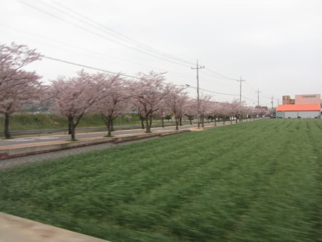
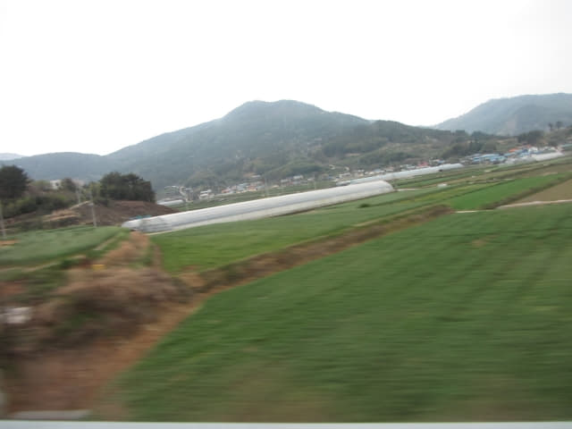
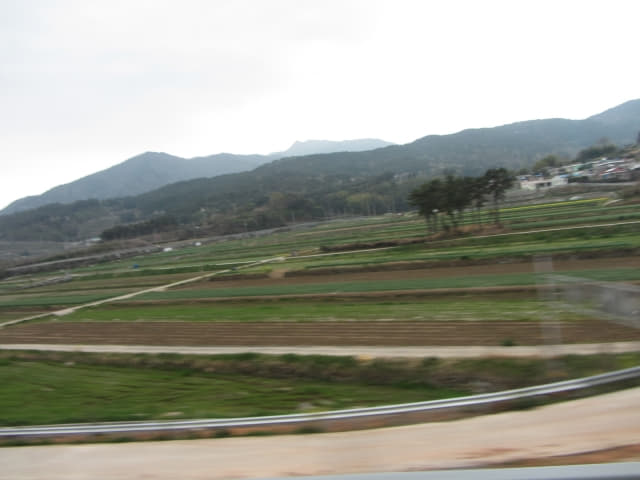

離開南海大橋山坡上的橋頭, 接著沿陡斜步道走下山坡, 返回海邊, 看見還未天黑, 也不知道什麼時間有巴士往南海公用客運站, 便走到橋下, 再從不同角度欣賞南海大橋的美姿才離開。

欣賞完南海大橋, 看見天色十分昏暗, 不想往南海忠烈祠, 而第一天的南海行程也在這裡宣佈完滿結束, 接著是找返回南海公用客運站的巴士站。不知道巴士站的正確位置, 只知道是在剛才經過的海鮮餐廳區附近。
接著朝海鮮餐廳區的方向走去。離開前再回頭望望南海大橋。
「노량」巴士站乘巴士返南海公用客運站
來到海鮮餐廳區, 看見路旁有一個巴士站 —「노량」巴士站, 但不肯定方向是否正確, 便問途人, 有些說在這裡等, 有些指馬路對面的店舖那裡, 但看看對面, 根本沒有巴士站, 唯有在這裡等。受了寶城大韓茶園．第二茶園乘巴士的驚險教訓, 開始擔心會否又歷史重演。
正在徬徨之際, 就在這時, 一輛巴士在前面閃出, 本以為巴士會駛來巴士站停靠, 正想揚手之時, 怎料巴士在街口轉左, 在馬路對面的店舖前停下來。
莫非真的是在對面的店舖前乘搭? 便立即跑過馬路, 向巴士走去。
來到巴士車門前, 看見車長施施然的走下車, 便連忙問他, 他表示巴士是往南海公用客運站的! 頓時鬆了一口氣, 今天的運氣不俗!
接著車長走往店舖買了一罐汽水, 站在店舖前喝。
哦! 原來這裡是巴士總站!
等了一會, 車長慢慢的走回來, 上車, 轉換了放在車頭的路線牌。我們也跟著上車, 車資每位是 2,200韓元, 比來的時候貴了一些, 也倒是, 路程遠了一些。有點奇怪, 車資是交給車長的。
連同我們, 車廂內只有三位乘客。
巴士約下午五時十分從「노량」巴士站開出。沿途都是青蔥的田園景色。



巴士約下午五時四十五分抵南海公用客運站。
下了車, 往客運站大樓二樓的 티큐브남해점 (TCUBE) 超級市場買了明天的早餐 — 兩個碗麵和一個大蛋糕。
「배가네돼지국밥」餐館 豬軟骨湯飯晚餐
從月台前的小路走出南海公用客運站, 馬路斜對面便是「비잔틴모텔」汽車酒店, 心想如果是在這間住宿, 真是方便, 但素質會否有 Manhattan Motel 那麼好?
走過「비잔틴모텔」汽車酒店, 再向前走幾十步, 經過一間餐館, 店舖的招牌是「배가네돼지국밥」, 看見門前的圖片菜單甚合胃口, 便立即決定在這裡吃晚餐。
進入餐館, 坐下來, 按圖片叫了兩客晚餐, 看來應該是豬肉吧!

等了一會, 先送來前菜, 比估計的豐富很多, 最喜愛是韭菜, 混在湯內吃很爽口, 很清甜。
主菜也送來了, 原來是豬軟骨湯。豬軟骨很入味, 很有口感, 讚!
豬軟骨湯飯非常好味, 十分滿足, 結帳只是 14,000韓元, 超值啦! 原本後晚也打算來 Encore 的, 怎料因為這店舖位置的缺憾, 令我們竟然去錯了隔鄰那間質素相差甚遠的餐廳。至於是什麼位置的缺憾, 到時才說吧!
吃完晚餐, 沿昏暗街道慢慢走回 Manhattan Motel, 晚間酒店外牆的燈飾很迷人。酒店雖然遠離了南海公用客運站一些, 但絕對是值得的。
乘電梯返回5樓房間, 約晚上七時三十分, 休息一會, 寫了今天的日記, 上了一會兒互聯網, 明天南海的天氣預測是天陰, 沒有下雨, 可以按原定的計劃進行。 接著洗澡, 睡覺。就這樣結束了第一天的南海行程。
明天的行程十分精彩, 早上遊覽加川梯田村, 下午遠足穿過南海四大橋樑 — 三千浦大橋、草養大橋、勒島大橋、昌善大橋, 跨越三島 — 慕開島、草養島、勒島, 而草養島的一段道路更有韓國最美道路的美譽, 真是十分期盼!